The abstract principles to develop viewpoints are explained in Kitalpha.
Access to the page of the Basic Viewpoints for existing viewpoint samples.
Setting up the development environment is described in the Capella wiki.
There is 2 means to start working with a viewpoint in a workspace:
Open Capella studio and apply the commands: File/New…/Project – Viewpoint DSL Project As target application can select:
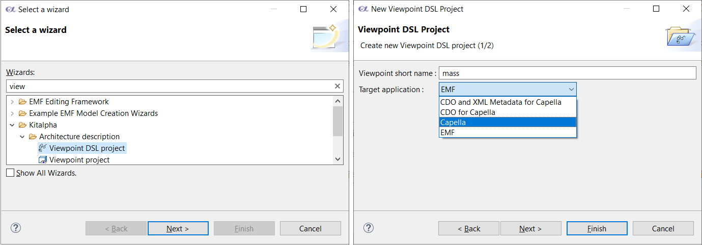
Set the name, choose Capella. An Eclipse plugin is generated and the following files are present (in model):
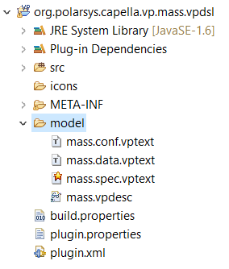
You can check the capella-basic-vp example.
If
CDO for Capella is selected as target then one of the generated bundles is specific to the CDO platforms. Thus, it requires the bundle org.eclipse.emf.cdo which is not available into Capella Studio and the following steps are necessary:
A new target platform is needed. To configure it:
Menu Window > Preferences > Plug-in development > Target platform.The spec.vptext is the root file containing the VPDSL information.
The
conf.vptext will contain the configuration of the viewpoint.
Target is the targeted application. This can be Capella, CDO for Capella (targeting for instance Team for Capella), XML (generating additional files).
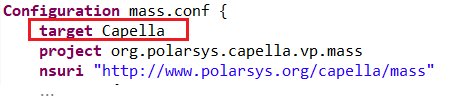
The Data aspect is essential because information of some other aspects (e.g., UI, Diagram) is deducted from the data description.
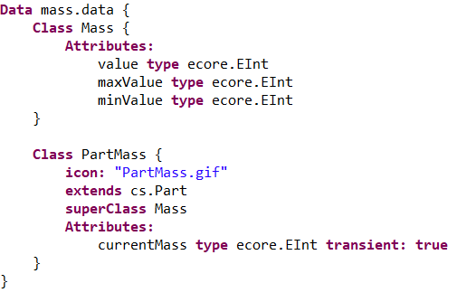
In this figure, the classes Mass and PartMass have attributes and no association.
Inheritance is identified by the key word superClass, such as for PartMass. Mass has no inheritance. Due to the "Capella" Target Application, during the generation of the ecore file (Cf. org.polarsys.capella.vp.mass plugin), a class without superclass inherits from the Capella NamedElement class.
The mechanism of inheritance enables to a have complete inheritance at the viewpoint level, not only from the data but also for the diagrams for instance.
An extension creates extension elements in an extended element. For Basic Mass, PartMass extends (Capella) Part. All the PartMass elements are contained by a Part element 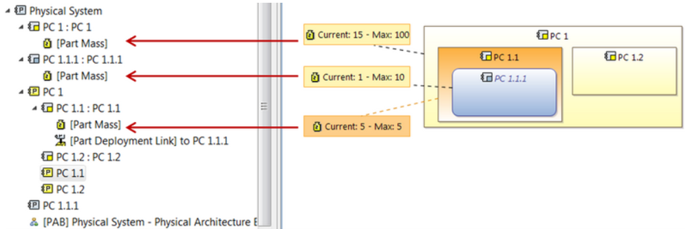
To create a new aspect, need to use the mass.spec.vptext.
|
Hit CTRL+Space: choose the new aspect to be created
|
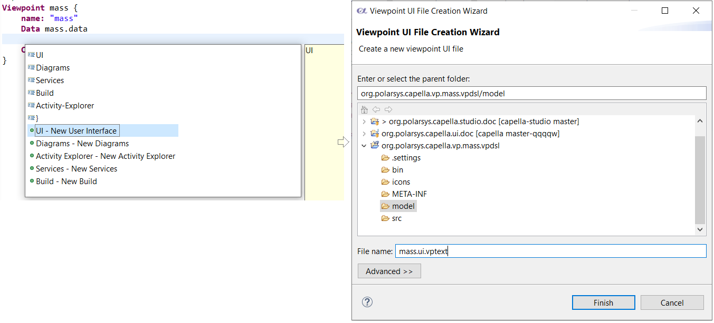
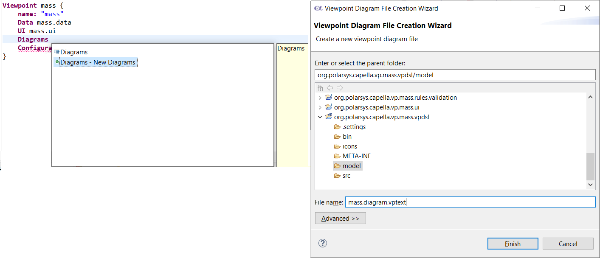
The UI contents is empty at the beginning. Populate it by
CTRL-Space and selection of the
"UI - Generate User Interface for all classes" option in the menu.
The generated contents is deduced from the data description. The generation is not incremental. This means that when the Data aspect part evolves, a new generation is produced apart and ignores the previous one.
By CTRL-Mouse on an attribute (e.g. mass.data.Mass.value), it is possible to navigate toward the attribute defined in the Data aspect.
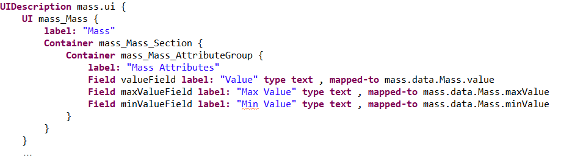
Using Sirius Property Views in a Capella Viewpoint requires some adaptations of the tooling. It is possible but may cause some problems with existing extensions and tools integrations in Capella. For this reason we do not provide it in the Capella Studio release and the specific dependencies needs to be added.
In order to develop your viewpoint with this capability, it is first necessary to update your Capella Studio to include the dedicated features and their dependencies.
The Sirius update site located under:
https://download.eclipse.org/sirius/updates/ contains the required features.
Please use the correct repository depending on your version of capella (to get this information head to
https://download.eclipse.org/capella/core/updates/releases/[YOUR_CAPELLA_VERSION_HERE]/targets/capella.target-definition.targetplatform
and check the line with Sirius).
Then install the
Sirius Specification Environment feature.
After installing this, the dedicated Sirius Property views will be available.
You will then need to bundle you viewpoint and install it on Capella.
In order to get it working on Capella it will be necessary to update your Capella installation and install EEF and then Sirius Specification Environment from the Sirius update site.
As an alternative, one may add the following features as dependencies in your viewpoint build (in <my_viewpoint_name>.representation.feature/feature.xml or <my_viewpoint_name>.feature/feature.xml) and publish again the viewpoint (these files are not re-generated when publishing the viewpoint):
<includes id="org.eclipse.sirius.runtime.ide.eef" version="0.0.0"/> <includes id="org.eclipse.sirius.properties.feature" version="0.0.0"/> <includes id="org.eclipse.eef.ext.widgets.reference.feature" version="0.0.0"/> <includes id="org.eclipse.eef.sdk.feature" version="0.0.0"/>
A diagram is made of three parts:
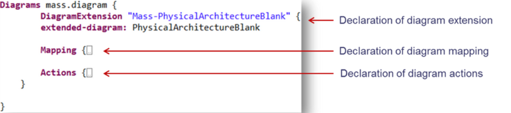
Note: Even if it is possible to generate a skeleton for diagram tools using VPDSL, the odesign file will be the place to edit and maintain diagram representations.
See
Sirius Tutorials.
Import the vpdsl project in the Capella Studio workspace.
Open the vptext file by double-click. If an error occurs, this means that the vptext is not recognized automatically. In this case, on the vptext file, right-click and Open With Data / User Interface / Diagram / Configuration for the data / ui / diagram / conf vptext files.
The viewpoint description with Kitalpha is stored in a model (.vpdesc file) and edited with a set of editors dedicated by aspect.
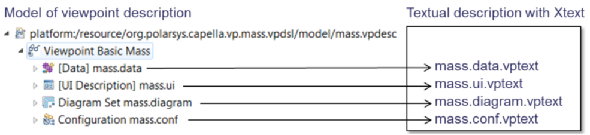
Select the file conf.vptext -> Viewpoint DSL -> Generate Viewpoint.
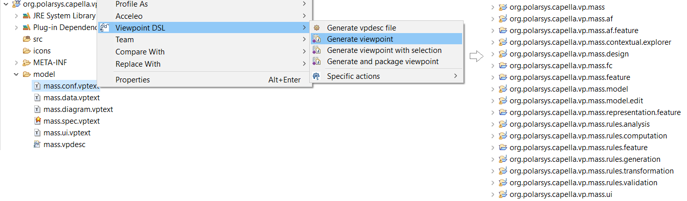
Some addons M2 are not generated from a .vptext but directly from an
.fcore.
In this case, open the
.fcore, right click on the last FactoryComponent, and select
"Run EGF Activity...".
The generated plugin org.polarsys.capella.vp.mass.contextual.explorer must be deleted and instead add a new plugin following the tutorial on Semantic Browser.
To avoid performance issues, some guidelines must be followed.
When an extension needs to retrieve representations (representation targeted by an element, representation per kind, representation that will be visible in documentation...) or need to store additional information about representations, please use their representation descriptors as much as possible instead of using/storing it in the representation.
Indeed, in a Team for Capella context, a representation is not loaded until it is accessed through descriptor.getRepresentation() (which is the case when the user opens a representation), only its descriptor is. Descriptor may contains the required information that fulfill your needs about representations without have to load the content of the representation and can also be used to store information about it.
Please also refer to Capella Release Notes.
For performance reasons, when writing expressions in .odesigns it is recommended to:
This expression called at each diagram refresh should be the most efficient possible. It can be computed based on the displayed graphical elements using the variable *diagram*. When 'Import Mapping' are used, please ensure that semantic candidate expression has been updated accordingly to the semantic candidate expression of the imported mapping
Create Generic Viewpoints using:
From one Version to another the Capella Metamodel can evolve and its existing classes can be modified or removed.
If your Viewpoint Metamodel has any dependencies to the parts of the Capella Metamodel that evolved, then it is necessary to migrate your viewpoint. Here are the three steps that will enable you to do so:
Imagine that your viewpoint metamodel inherits from class A. In the new Capella version class A becomes abstract and two new classes B and C inherit from it. This means that all instances in your model that reference class A are obsolete and erroneous, since this class is no longer instantiable.
In this scenario your viewpoint needs to contribute to the native Migration mechanism and replace all the references to class A with references to class B or C. This will allow existing models to become compatible with your viewpoint by simply migrating them.
A good starting point is the org.polarsys.capella.core.data.migration plugin that contains migration examples for the current version of Capella and especially the AbstractMigrationContribution class that you will need to extend in order to add your custom migration logic.
On EObject, you have to avoid as much as possible calls to eObject.eResource()
If your metamodel elements doesn't inherit from org.polarsys.capella.common.data.modellingcore.ModelElement, you have to contribute an Id handler via the extension point "org.polarsys.capella.shared.id.handler.IdHandler" You can simply extend the org.polarsys.capella.shared.id.handler.AbstractIdHandler.